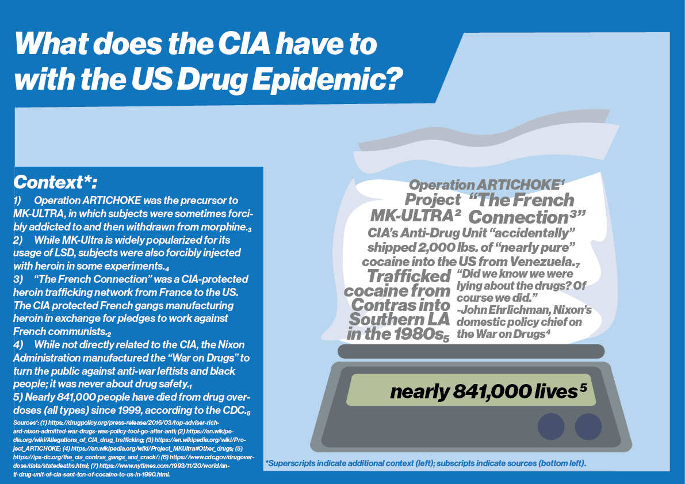
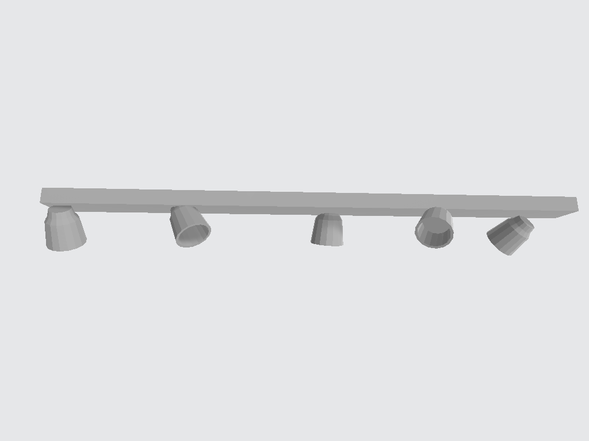
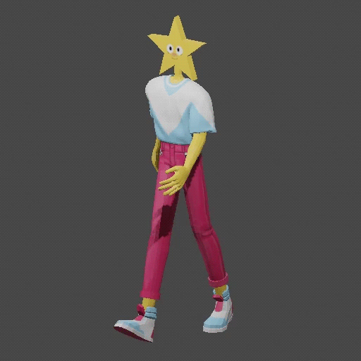
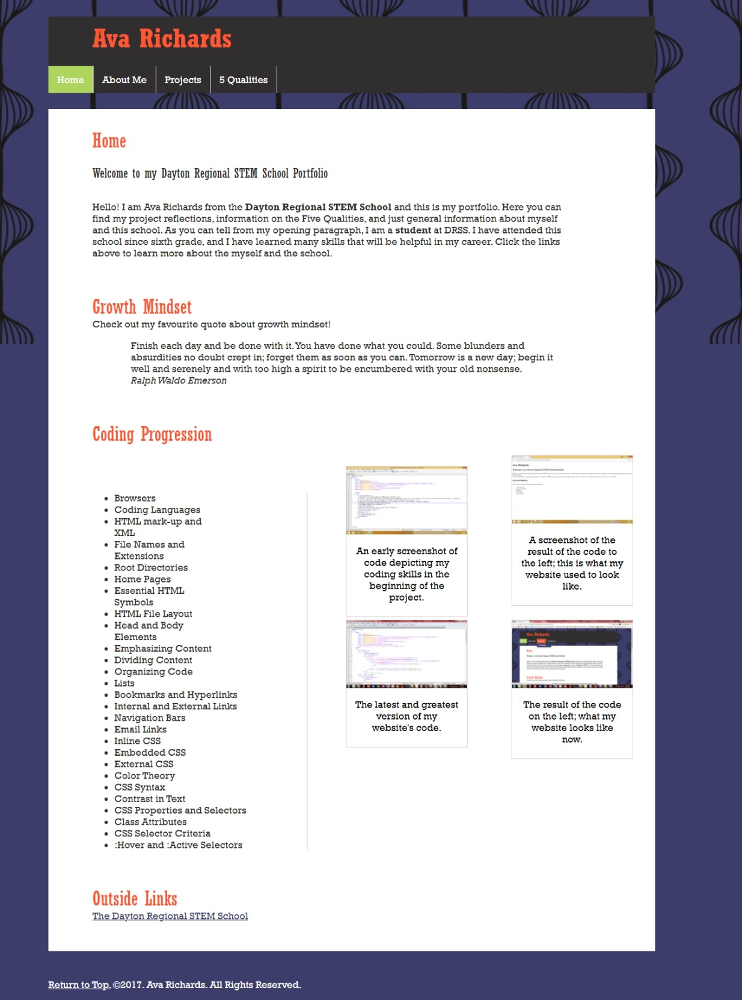
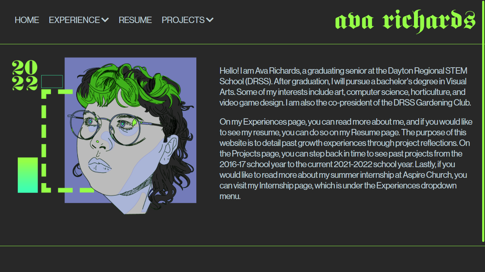

Grade 12
Greatest Growth Statement
My greatest growth throughout my experience at the Dayton Regional STEM School (DRSS) has been my growth in technological skills. When I started attending DRSS in sixth grade, I had a basic proficiency with operating desktop computers. However, during my time at DRSS, I have deepened my understanding of technology beyond ordinary usage. Because of the technology I used in class in middle school, I was inspired to teach myself how to create 3D models in Blender, which later helped me in my Game Design classes. Additionally, through repeated practice using Adobe Illustrator, I have strengthened both my abilities using the program and my design skills. Lastly, through my experience with coding my own portfolio and uploading files to an external server, I gained a greater understanding of how applications and websites are built and managed. In an increasingly technologically-dependent world, an advanced understanding of technology will be helpful because it gives me an advantage over other applicants when I pursue college, it gives me the necessary knowledge to help my peers with technological issues, and it gives me skills I can apply in other fields, such as my art.
Artifact 1 - Previous Illustrator Work
I created this poster in eleventh grade for an assignment in Economics class. In terms of its design, I can recognize now how the cluttered text detracts from the reading experience. Additionally, I had not attained an understanding of other tools in Adobe Illustrator beyond the curvature tool for creating shapes; had I known how to use the Pen tool, I would have improved the curves used in my illustration. While I was already somewhat familiar with Illustrator when I made this, I still did not have the full understanding of the program I have now, after having created the logo below.
Artifact 2 - Illustrator Work for E-Sports team

This is my most recent work in Illustrator, which I made for the DRSS e-sports team, The Innovators. I first developed the drawing in Photoshop, then recreated it using the Pen, Direct Selection, and Curvature tools in Illustrator by overlaying the inner shapes of the drawing on top of the silhouette. I used the Pathfinder tool to combine the shapes together and to cut the shapes I made from the silhouette to create dynamic lineart. Without learning how to do this, I likely would not have attained this same effect. This project also required me to learn how to use rich versus true black in preparation for printing. I learned that true black uses less toner, while rich black makes text stand out. Learning how to use new tools and how to improve my future print jobs, I have strengthened my graphic design skills, which will help me in that career path if I choose to pursue it.
Artifact 3 - First Blender Models
The first time I used Blender for a school project was the Virtual History Museum project. At the time, I had little experience with 3D modeling beyond basic shape manipulation, so I did not know how to create detailed, or high-polygon, models. I also did not know how to add textures to my models. This model was created with cylinders and a cube; the shapes are unconnected, because I did not know how to combine shapes. While it achieves its purpose in my level as a minor prop, I now know many ways I can improve it.
Artifact 4 - 3D Animations and Models in Game Design
This animation was the culmination of my individual study into character modeling and animation at the end of my junior year. In this self-directed project, I learned about modeling best practices, texturing models, cloth physics simulations, and rigging characters for animation. I also learned how to manipulate shapes using different modifiers in Blender; I learned that, like the Pathfinder tool in Illustrator, the Boolean modifier can change a mesh (3D shape) based on how another object intersects it.
When I first began attending the Dayton Regional STEM School (DRSS), I wanted to become a 3D animator. By spending four years learning 3D modeling, I learned how to attain this dream through self-study. While I no longer aspire to work specifically in the animation industry, I will use these skills in other careers in the future; 3D modeling is especially important in video game production, and I intend to pursue 3D game art as a career in the future.
Artifact 5 - 7th Grade Portfolio
My seventh grade portfolio is the first website I ever coded. Even at the time, I did my own research to go beyond the expectations of the DRSS Portfolio Project. I researched how to add margins, padding, fonts, and even a custom favicon (browser icon). However, now I can recognize the faults in my website's design. Firstly, the margins are intentionally uneven, which looks like a mistake. Secondly, the website is in no way optimized for other device resolutions; when scaled to a mobile resolution, the text is illegible and the content structure collapses. Thirdly, I noticed on my About Me page that I had defined an image's path absolutely, so it cannot display outside of its exact location on my computer, which is impractical for a website. I also noticed in the HTML file that the code is poorly formatted and that many parts are named "test", which implies they were meant to be temporary, but I never renamed them. Overall, I would consider this a good attempt at a first website, but I can see, in many ways, that I lacked the understanding of HTML and CSS I have now.
Artifact 6 - 12th Grade Portfolio
Since seventh grade, I have learned many things, but mostly, I have retained the spirit of self-researching different components to add to my website. This year, I coded my website to be fully compatible with desktops, tablets, and mobile phones; while adding this functionality has been an ongoing attempt since tenth grade, I finally achieved true device-responsive design by learning new code. I have used a "flexbox" layout on many of my pages, allowing for content to look intentionally formatted on any screen. However, the biggest difference between my two websites is the addition of Javascript. I used Javascript to create mobile functionality in my website's navigation, customize my website's scrollbars, host a custom video player, and create dropdown menus in my navigation. Because this website is my final portfolio, I want to ensure it shows my full understanding of coding.